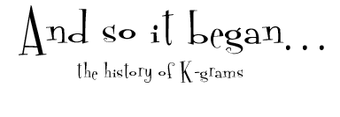
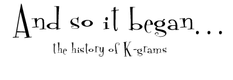

|  |
|  |
|
|
| The Idea: K-grams was officially founded in the summer of 1998 by Rishi Moudgil, a sophomore at the University of Michigan. Already very active within the volunteer community, Rishi saw the need for establishing an ongoing relationship between college students and children. While seeing othermentoring/tutoring programs as somewhat cumbersome, he recognized the potential for a pen pal program between university residence halls and elementary schools - a simple yet effective way to establish these community relationships. Rishi took these enormous possibilities for the program and began to solicit his friends and colleagues to help launch the program. By the June of 1998, he had already named the program K-grams (short for Kids Programs) and the first official meeting was July 16th with a half-dozen eager volunteers! |
| Expanding the Horizons: Six Ann Arbor elementary schools - Bryant, Carpenter, Mitchell, Northside, Pattengill, and Pittsfield - were initially recruited to join the program. Nine residence halls were originally chosen, and, as the school year approached, heavy recruiting began. A total of 750 University students were brought into the program in less than two weeks by long days and nights of recruiting relentlessly though Welcome Week and the residence halls ! At the beginning of the second semester, K-grams expanded to its first school outside of Ann Arbor - Holmes Elementary School in Ypsilanti. By the end of its first year, K-grams reached over 850 University pen pals and laid a framework for the organization to continue to grow. |
|
The First K-grams Kids-Fair: The program expanded in other ways, too - pen pals began doing projects! Projects included activities at schools and in-hall events as well. These successful interactions between "big kids" and "little kids" sparked the idea for Kids-Fair, the culminating event that brought together teachers, parents, faculty, pen pals, and volunteers to conclude a successful first year for K-grams. The original Kids-Fair was planned for Palmer Field, but then moved to Oosterbaan Fieldhouse and included 115 student groups in its first year. Live entertainment, yellow shirts, charity drive for school supplies, collecting box tops for education, and many great student booths highlighted a day where kids of all ages learned together with each other! |
|
|
| The Millennium Mark: The popularity, immense growth, and success of the first year of K-grams led to strengthening the organizational structure in the second year. This included gaining an office, maintaining a fully interactive website, holding the first SPC Leadership Retreat, and expanding all programs. By the year 2000, K-grams expanded to include all the traditional residence halls, over 1,000 university pen pals, and hundreds of off-campus volunteers. Inclusion of Vetal School in Detroit helped move the mission forward by bridging communities and creating even more positive relationships. The culmination of a phenomenal K-grams year occurred at the Second Annual Kids-Fair 2000. Thousands of elementary and college pen pals, buddies, and student groups filled Crisler Arena on Friday, March 17 for the first day-long Kids-Fair. |
| Campus Partnerships: The K-grams partnership with Housing allowed students to have great new resources within the halls. Student groups soon began to express an interest to get involved so"Swing Sessions" were created as a way to allow groups to partner up with buddies and pen pals for class projects. Undergraduates in a Living/Learning community at Alice Lloyd (LHSP) also benefited by participating in a special class pertaining to the benefits of K-grams and community service. All funding for the enormous budget came within the U of M community, making K-grams and Kids-Fair a truly collegiate event. Finally, K-grams also began expanding to other colleges to help create similar programs across the nation! |
|
Plethora of Projects: Deepening pen pal relations was accomplished by offering pen pals multiple opportunities to interact with their pen pal. Projects in the classrooms were offered more regularly and became "edu-active" (educational and interactive) to further benefit the kids. Teachers began including K-grams as part of their curriculum more and more as the program became well respected. A reading program entitled BookMARK (Mentoring And Reading with Kids) was also created and established through each elementary school. By the fall of 2000, the Kids-Day was created to bring little kids to campus during first term and learn about various aspects of college life. At the Third Annual Kids-Fair, each little kid received an official K-grams diploma and a picture of their college pen pal to boot! |
|
|
| Building Beyond Campus: As K-grams established it's strength and presence on campus, it followed that the program's reach would begin to stretch off-campus into the surrounding communities. By actively seeking the advice, input and feedback from members of the elementary school community, from teachers to kids, parents to principals, the objectives of K-grams were only further enhanced, both at Michigan and on the national scale. |
| A Staple at Michigan: By 2002, K-grams had solidified its status at Michigan as one of the largest student run organizations. As the SPC membership rose to 70, K-grams entered a new level of campus recognition and influence. Kids-Fair 2002 was highlighted by buddy attendance of over 800 and for the first year, a theme to unite all aspects of the day, "Smilin' Around the World." By offering simple community service opportunities to a wide range of University students, K-grams only further strives to exceed its mission. |
|
Passing on Tradition: Spring of 2002 marked the graduation of the first "class" of K-grams participants - those for whom K-grams had always been around. From this point on, every member of the K-grams Leadership has had the opportunity to be a pen pal - the role that the success of K-grams rests upon! |
|
|
| About
K-grams | Pen Pal
& Swing Kid Info | Halls
& Schools | Kids-Fair
| BookMARK | Special
Programs | SmilePC
| Guestbook Comments about this webpage can be directed to our webmasters (smileweb@umich.edu) All other comments or questions can be sent to smile@umich.edu |